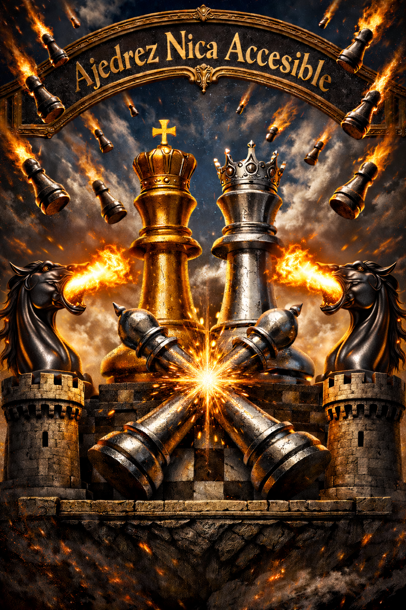

¿Qué es el Ajedrez Accesible?
El ajedrez es uno de los deportes más inclusivos en el mundo y Nicaragua no es la excepción. Gracias a las adaptaciones técnicas, las personas ciegas y con baja visión pueden competir en igualdad de condiciones utilizando el sentido del tacto.
Adaptaciones en el Tablero y Piezas:
Para hacer posible el juego, los tableros y las piezas cuentan con las siguientes modificaciones físicas:
- Casillas Diferenciadas: Las casillas negras sobresalen unos 3 a 4 milímetros por encima de las blancas, permitiendo al jugador identificar el color de la casilla al tacto.
- Agujeros de Fijación: Cada casilla del tablero cuenta con un agujero en el centro para asegurar la estabilidad de la posición.
- Piezas Adaptadas: Cada una de las piezas tiene una protuberancia o clavo en su base que encaja perfectamente en los agujeros del tablero, evitando que se caigan o se muevan accidentalmente al tocarlas.
Nuestros Objetivos:
- Divulgación y Concientización: Dar a conocer el ajedrez adaptado en Nicaragua y el mundo, demostrando con orgullo que las personas ciegas sí podemos jugar y competir al máximo nivel.
- Clases de Ajedrez: Enseñanza y perfeccionamiento del juego adaptado.
- Competencia: Organización de torneos.
Noticias
- Noticias de la FIDE. Pulsa Enter para abrir.
- CCA Confederación de Ajedrez de las Américas. Pulsa Enter para abrir.
- Asociación Internacional de Ajedrez Braille (IBCA). Pulsa Enter para abrir.
- Página de Chess-Results de Nicaragua. Pulsa Enter para abrir.
- Apartado de Discapacidad FIDE. Pulsa Enter para abrir.
- Consulta las clasificaciones de ajedrez en directo en Chess.com. Pulsa Enter para abrir.
- Escucha el programa de radio Jaquelandia en RTVE Play. Pulsa Enter para abrir.
Sitios y programas accesibles
Compartimos en este espacio los enlaces, descargas and descripciones de las plataformas, lectores de pantalla y softwares adaptados que utilizamos para estudiar, entrenar y jugar al ajedrez de forma completamente accesible:
- Plataforma oficial de Lichess.org para jugar online. Pulsa Enter para abrir.
- Ejercicios de táctica y problemas de mate. Pulsa Enter para abrir.
- Descarga del motor de análisis Stockfish. Pulsa Enter para abrir.
- Descarga del motor de redes neuronales Leela Chess Zero (LCZero). Pulsa Enter para abrir.
- Descarga de archivos de partidas en PGN Mentor. Pulsa Enter para abrir.
- Programa SK Chess para Windows (reproductor de PGN). Pulsa Enter para descargar automáticamente.
- Diccionario en español para SK Chess. Les recomendamos ver el video explicativo en nuestro canal de YouTube para saber cómo aplicarlo. Pulsa Enter para descargar automáticamente.
- Programa WinBoard para Windows para reproducir archivos PGN. Pulsa Enter para descargar automáticamente.
- Diccionario en español para WinBoard. Les recomendamos ver el video explicativo en nuestro canal de YouTube para saber cómo aplicarlo. Pulsa Enter para descargar automáticamente.
- Programa de reloj de ajedrez Ericlock para Windows. Pulsa Enter para descargar automáticamente.
- Programa para compilar partidas de ajedrez en PGN. Pulsa Enter para descargar automáticamente.
- Aplicación ChessClock+ App para iOS (Apple). Pulsa Enter para abrir en la App Store.
- Aplicación Chess-Studio para iOS (Apple). Pulsa Enter para abrir en la App Store.
- Aplicación ChessBack para Android. Pulsa Enter para abrir en la Google Play Store.
- Aplicación Analyze This Pro para Android (reproductor de PGN). Pulsa Enter para descargar automáticamente.
- Complemento applicationDictionary para NVDA (traductor de programas utilizando un diccionario). Pulsa Enter para descargar automáticamente.
- Complemento fenReader para NVDA (lector de posiciones en código FEN). Pulsa Enter para descargar automáticamente.
Buzón de Comentarios y Sugerencias
Dejanos tus comentarios, dudas o sugerencias para seguir mejorando el ajedrez accesible en Nicaragua. Tu mensaje llegará directamente al administrador del sitio.